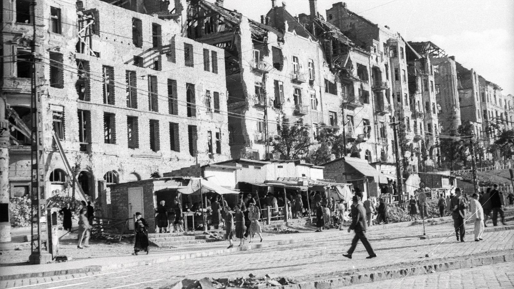
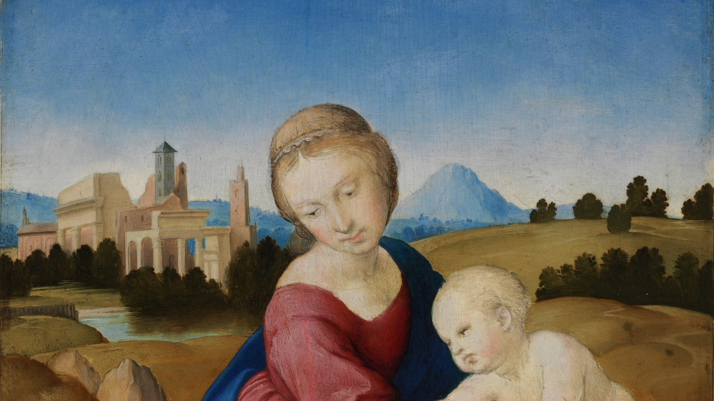

Valóban?
Végére járunk.
Magyar ismeretterjesztő csatorna. Ismert történeteket és állításokat ellenőrzünk, rangsorokat és érdekességeket gyűjtünk, és mindig megmondjuk, honnan tudjuk.
 Kezdd ittValóban kihaltak a dinoszauruszok? És hány szíve van a polipnak?
Kezdd ittValóban kihaltak a dinoszauruszok? És hány szíve van a polipnak?
- videó
- 154
- különböző forrás
- 841
- forrásra visszavezetett állítás
- 690
Friss cikkek
Összes MagyarországMi folyik Budapest alatt? Egy barlang, amit ma is csak búvárok járnakA budai barlangokat nem egyszerűen a felszínről érkező víz oldotta ki: a mélyből feláramló meleg víz kellett hozzá. A Molnár János-barlangban ez a munka ma is zajlik.
MagyarországMi folyik Budapest alatt? Egy barlang, amit ma is csak búvárok járnakA budai barlangokat nem egyszerűen a felszínről érkező víz oldotta ki: a mélyből feláramló meleg víz kellett hozzá. A Molnár János-barlangban ez a munka ma is zajlik.
Történelem és közéletMagyarország, 1946: mennyit ért a fizetésed, mire hazaértél vele?Egy nemzetközi táblázat szerint 1946 júliusában 15 óránként duplázódtak az árak, egy 2022-es magyar újraszámítás szerint viszont az infláció nagyságrendekkel kisebb volt. A fizetés sorsa két pénzen és egy éjszakán múlt.
BűnügyekHét festmény, egy éjszaka: ki rabolta ki a Szépművészetit 1983-ban?A Szépművészeti 1983-as kirablását az évszázad magyarországi bűntényének nevezték. A tetteseket elítélték, a képek hazatértek, a megbízó kilétét viszont nem bizonyították.
Legutóbb ellenőriztük
Az összes- Tényleg tele van vassal a spenót?TévhitNem, a spenót nem kiemelkedő vasforrás. A nyers spenót 100 grammjában nagyjából 2,7 milligramm vas van, és a benne lévő oxálsav gátolja a felszívódását. A tizedesvessző-legenda maga is mítosz.
- Tényleg csak 3 másodperces az aranyhal memóriája?TévhitNem. Culum Brown halkutató szerint az aranyhal emlékei hetekig, hónapokig, sőt évekig is megmaradhatnak.
- Tényleg Kocs faluról kapta nevét a kocsi?IgazIgen. A Komárom megyei Kocs kézművesei fejlesztették ki a könnyű, lóhúzta kocsi szekeret, ebből rövidült a szó. Az viszont csak legenda, hogy Mátyás király találta fel a kocsit.
- Feltekerve lopták el az Esterházy-madonnát?TévhitNem. Az Esterházy-madonna 28,5 cm magas fatábla, azt nem lehet feltekerni. A képeket nem kivágták, hanem kiszerelték a díszkeretükből.
- Tényleg a magyar a világ egyik legnehezebb nyelve?Részben igazNehéz, de angol anyanyelvűeknek nem a legnehezebb csoportba tartozik. Az amerikai külügy nyelviskolája a magyarra nagyjából 44 hetet becsül, a legnehezebb csoportra 88 hetet. A nehézség attól függ, honnan indulsz.
- Tényleg magyar növény a paprika?TévhitNem. A növény Mexikóból és Közép-Amerikából származik, Magyarországra a 16. században jutott el. A paprika szót a világ tőlünk vette át, mi viszont délszláv szomszédainktól kaptuk.
Témák
Hosszú részek
Összes


Legújabb Shorts-videók
ÖsszesTe mit ellenőriznél?
Hallottál valamit, és nem tudod, igaz-e? Írd meg: a következő téma akár ez is lehet.
Így dolgozunk
Részletesen- Egy téma, világos válaszMinden rész egy kérdésre, állításra vagy rangsorra épül. Nem az a cél, hogy jól hangozzon, hanem hogy kiderüljön, mi igaz.
- A források nyilvánosakMinden videónál felsoroljuk, honnan tudjuk, amit mondunk, így bárki utánanézhet. Itt az oldalon is, videónként.
- Bírálat kiadás előttMinden új videó tény- és nyelvi bírálaton megy át. Ha egy állítás nem állja meg a helyét, a videó visszamegy javításra.
Hibát találtál? Írd meg: boldaszelet@gmail.com
A feltöltő alkalmazásról
A „Valoban Feltolto” a csatorna saját, belső eszköze: a YouTube Data API-n keresztül tölti fel és ütemezi a csatorna saját videóit. Más felhasználók nem használják, és más fiók adataihoz nem fér hozzá. Részletek: adatkezelési tájékoztató.